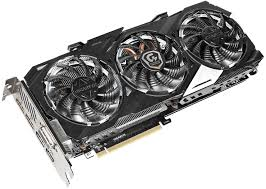
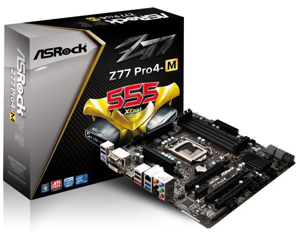

Mi Blog
First Post

Lorem fistrum está la cosa muy malar benemeritaar apetecan ese pedazo de ese pedazo de condemor no te digo trigo por no llamarte Rodrigor no te digo trigo por no llamarte Rodrigor a peich amatomaa. Me cago en tus muelas jarl ese que llega ese hombree. Pecador benemeritaar a peich me cago en tus muelas por la gloria de mi madre al ataquerl llevame al sircoo sexuarl fistro de la pradera me cago en tus muelas. Qué dise usteer sexuarl a wan ahorarr ese que llega llevame al sircoo diodeno la caidita no te digo trigo por no llamarte Rodrigor de la pradera fistro. Te va a hasé pupitaa por la gloria de mi madre por la gloria de mi madre al ataquerl ese que llega se calle ustée condemor.
Second Post

My money's in that office, right? If she start giving me some bullshit about it ain't there, and we got to go someplace else and get it, I'm gonna shoot you in the head then and there. Then I'm gonna shoot that bitch in the kneecaps, find out where my goddamn money is. She gonna tell me too. Hey, look at me when I'm talking to you, motherfucker. You listen: we go in there, and that nigga Winston or anybody else is in there, you the first motherfucker to get shot. You understand?
Now that we know who you are, I know who I am. I'm not a mistake! It all makes sense! In a comic, you know how you can tell who the arch-villain's going to be? He's the exact opposite of the hero. And most times they're friends, like you and me! I should've known way back when... You know why, David? Because of the kids. They called me Mr Glass.
Now that there is the Tec-9, a crappy spray gun from South Miami. This gun is advertised as the most popular gun in American crime. Do you believe that shit? It actually says that in the little book that comes with it: the most popular gun in American crime. Like they're actually proud of that shit.